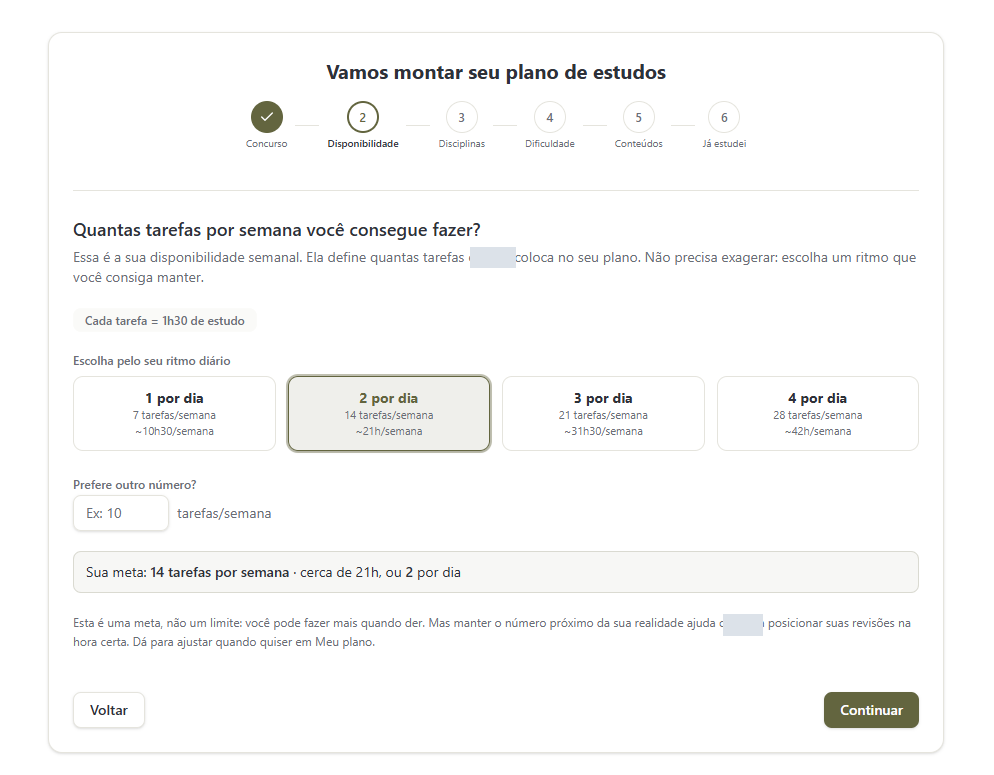

Esta imagem não abriu. Abrir a captura original.
Da disponibilidade real de tempo à próxima tarefa, com revisões integradas à rotina.
Conhecer o projetoComo projetei a ferramenta
- Minha atuação
- Planejamento, desenho das telas e implementação com agentes.
- Entrega
- Uma ferramenta de uso próprio para organizar tarefas e revisões.
A ideia nasceu da minha própria rotina. Quem estuda para concurso lida com muitas disciplinas, pouco tempo e a dúvida diária sobre o que estudar agora. Eu queria um planejador que partisse das horas que a pessoa realmente tem, ajustasse o peso de cada disciplina pela dificuldade e trouxesse de volta o que precisa ser revisado, sem refazer o plano toda semana.
Projetei a ferramenta para mim. Comecei pelo problema e pelas regras do plano, depois escrevi um roteiro em nove etapas com as telas, o comportamento do planejamento e o que a IA pode e não pode fazer. A implementação seguiu esse roteiro, e o roteiro foi ajustado conforme o uso.
Como funciona
- A pessoa informa a disponibilidade: quantas tarefas consegue fazer por dia.
- Escolhe e ordena as disciplinas, define a dificuldade e os formatos de estudo de cada uma.
- Marca o que já estudou, para retomar do ponto certo.
- O plano gera a fila de próximas tarefas e as revisões planejadas.
- Caderno de erros e revisões inteligentes trazem de volta o que rendeu menos.
- Simulados e prática de discursivas com avaliação orientativa por IA.